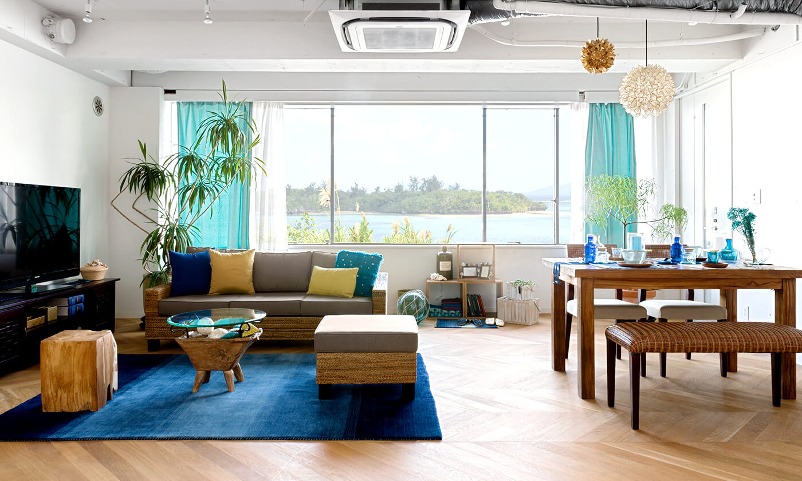

|  |
住建部：房价已经稳住 房地产税正在推进
针对这种情况，热点城市所在的省政府，热点城市政府积极努力采取各种措施，认真承担了调控的主体责任。 |
||
|
对商品住宅、类住宅政策及趋势的几点看法
自去年3月份上海“沪九条”调控至今差不多一年有余，论调控效果来看，去年10月份的“沪六条”开始政策的效果才真正显现 |
|||
|
房地产税风声鹤唳 一二线城市楼市会大逆转吗
有媒体报道了这样一则新闻：中国社会科学院的专家建议，率先在一二线房地产热点城市开征房地产税，并认为现在是最佳时机 |